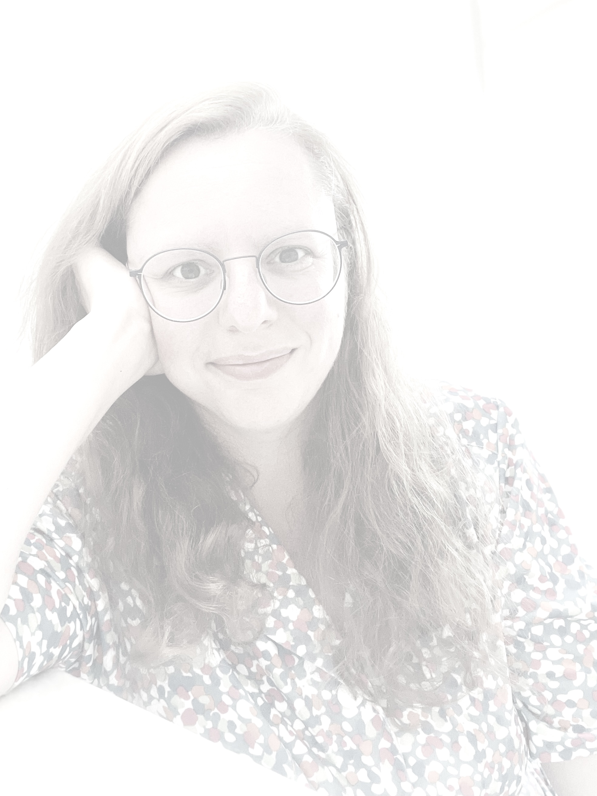

In 2000 verliet ik het Grafisch Lyceum zonder diploma — Ik was 17 en had geen interesse enkel interesse in welke vorm van institutioneel onderwijs dan ook— Ik ging ik aan de slag in de fotografie en specialiseerde me in het repareren van camera’s en projectoren.
In 2006, inmiddels ouder, wijzer en beter toegerust om binnen de grenzen van het onderwijs te navigeren, begon ik aan de Interfaculty ArtScience (image and sound) aan de Koninklijke Academie van Beeldende Kunsten (KABK) en het Koninklijk Conservatorium (KonCon) in Den Haag. Ik studeerde af in 2010. Daarna nam ik deel aan verschillende groepstentoonstellingen, maar ik vond het moeilijk om mijn eigen werk te verkopen.
Ik werkte een paar jaar in een speciaalbiercafé, waar ik een poging deed tot bierbrouwen maar daar had ik geen geduld voor. Beter was ik in het vormgeven van de etiketten. Gelukkig kon ik die vaardigheid goed inzetten bij het ontwerpen van de etiketten and merchandise voor Raven Bone Hill Brouwers.
In diezelfde tijd vond ik mijn plek bij een klein bureau voor visuele communicatie, waar ik bijna tien jaar als researcher en conceptontwikkelaar heb gewerkt. Ik hield me bezig met de meest uiteenlopende onderwerpen en complexe thema’s waarvoor ik inhoudelijke concepten en scenario’s schreef. Ook volgde ik in die periode een post-HBO Datavisualisatie aan de Hogeschool Utrecht (HU).
In 2023 maakte ik een carrièreswitch; gedreven door onder andere een fascinatie voor het systeem achter leren en een honger om zelf te blijven leren, werd ik zij-instromer in het onderwijs en rondde in twee jaar de PABO aan de Hogeschool Rotterdam (HR) af. De ironie dat ik nu zelf onderdeel ben geworden van het institutionele onderwijs, amuseert mij wel.
Momenteel werk ik, naast mijn rol als leerkracht in de bovenbouw van een montessorischool, aan eigen projecten zoals Cerebrum Infographica en Mixed Feelings. Alles wat ik doe, komt voort uit een brede nieuwsgierigheid naar hoe dingen werken and hoe ze met elkaar samenhangen.
Mijn interesse richten zich nu op vraagstukken rondom complexiteit en emergentie. Daarnaast ben ik gefascineerd door menselijke interactie, metacognitie, neurodiversiteit en de vraag hoe verschillende breinen elkaar kunnen versterken. De onderliggende motivaties achter menselijk gedrag vind ik fascinerend.
